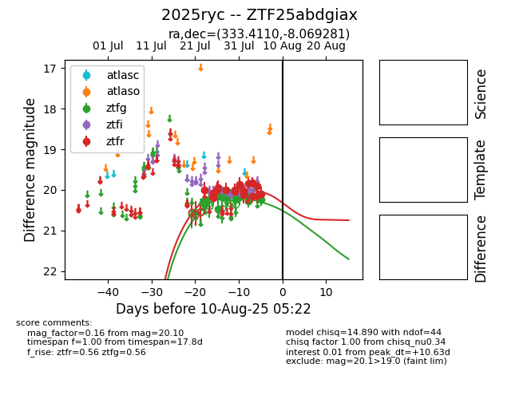

Target 2025ryc at 2025-08-10 05:22, see:
FINK: fink-portal.org/2025ryc
Lasair: lasair-ztf.lsst.ac.uk/objects/2025ryc
ALeRCE: alerce.online/object/2025ryc
TNS: wis-tns.org/object/2025ryc
YSE: ziggy.ucolick.org/yse/transient_detail/2025ryc
alt names
ZTF25abdgiax (ztf,fink)
2025ryc (tns,yse)
coordinates:
equatorial (ra, dec) = (333.4110,-8.06928)
galactic (l, b) = (52.5064,-48.11166)
photometry
last ztfg=20.23, ztfr=20.10
17 ztfg, 19 ztfr detections
